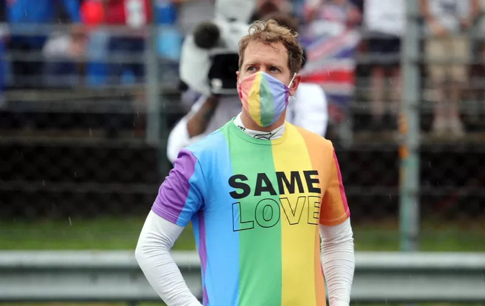

politika
FIA pod vodstvom predsjednika Mohammeda Ben Sulayema ne odustaje od borbe protiv neprimjerenog izražavanja u F1 pa je tako uveden niz strožih kazni koje će se primjenjivati za takve prekršaje.
Međunarodna automobilistička federacija (FIA), inače krovna organizacija Formule 1, svim je vozačima zabranila isticanje političkih, religioznih ili ostalih osobnih komentara, poruka i istupa bez ranije dozvole. Za zabrana ne vrijedi samo za vozače Formule 1, već i za sva natjecanja koja spadaju u FIA-inu nadležnost, koja je sada uvela novi članak u svoj Međunarodni sportski kodeks.
“Zabranjeno je općenito iskazivanje i prikazivanje političkih, vjerskih i osobnih komentara koji osobito krše opće načelo neutralnosti koje FIA promovira u skladu sa svojim statutom”, stoji u tom članku. Do ovoga je došlo nakon nedavnih istupa u F1, pogotovo od strane višestrukih prvaka svijeta, Lewisa Hamiltona i Sebastiana Vettela. Tako je, primjerice, britanski vozač 2020. godine na Velikoj nagradi Toskane nosio majicu s porukom koja se odnosila na policijsko ubojstvo Breonne Taylor. Isto tako, te je godine, baš kao i lani, Mercedes izdao opremu s natpisom podrške kampanji ‘Black Lives Matter’. Kodeks vrijedi za sva FIA-jina natjecanja, a za prvi takav prekršaj u F1 definirana je kazna od 40.000 eura. Drugi prekršaj nosi 80.000 eura kazne i jednomjesečnu uvjetnu suspenziju, a treći 120.000 eura, jednomjesečnu suspenziju i oduzimanje nedefiniranog broja prvenstvenih bodova. Isto vrijedi za javno poticanje na nasilje i mržnju te bilo kakve riječi, postupke ili tekstove koji uzrokuju moralnu povredu ili gubitak FIA-ji, njezinim tijelima, članovima ili službenicima te povređuju interes motosporta i vrijednosti koje zastupa FIA. Izražavanje političkih, vjerskih i osobnih stavova koji se kose s općim principom neutralnosti federacije nosi strože kazne – 40.000 eura koji mogu biti uvjetno, javnu ispriku i povlačenje komentara za prvi prekršaj, 80.000 eura, javnu ispriku, povlačenje komentara i jednomjesečnu uvjetnu suspenziju za drugi prekršaj te 120.000 eura, ispriku, povlačenje, jednomjesečnu suspenziju i oduzimanje prvenstvenih bodova.
Najveće kazne namijenjene su kršenju uputa vezanih uz sudjelovanje na službenim ceremonijama federacije. Prvi prekršaj – 60.000 eura, drugi prekršaj – 120.000 eura i zabrana pristupa rezerviranim područjima za idući događaj te treći prekršaj – 180.000 eura, zabrana pristupa od 6 mjeseci i oduzimanje prvenstvenih bodova. Svi prekršaji broje se u periodu od dvije godine.